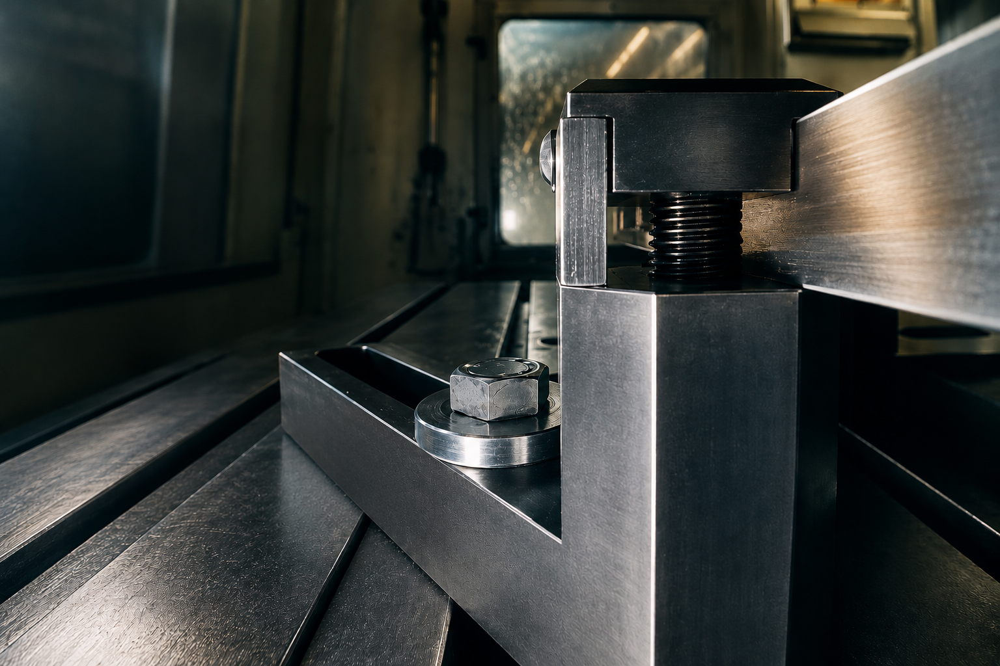
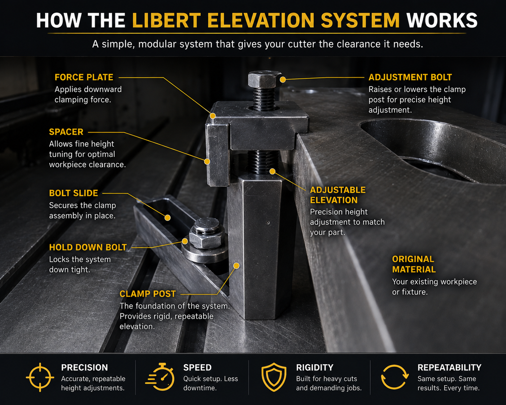
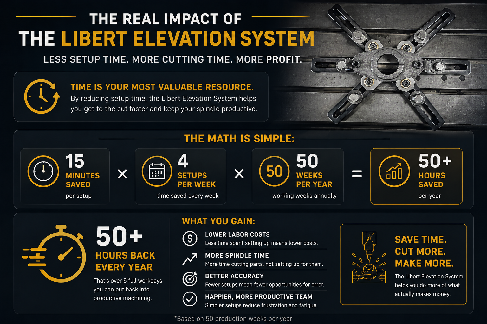

Stop Moving Parts. Start Making Chips.
Modular workholding designed to improve cutter access, reduce repositioning, and machine more surfaces before the part has to move.

The setup problem is not the cut. It is everything before the cut.
Traditional setups often force machinists into shimming, blocking, multiple repositioning operations, re-indicating, and compromise tool access. Every extra setup adds time, cost, and another chance for error.
Too much repositioning
Multiple setups slow jobs down and create opportunities for alignment issues.
Limited cutter access
Low or crowded workholding can block tool paths and reduce usable cutting area.
Lost production time
Time spent building complicated setups is time the spindle is not making chips.
The Libert Elevation System raises the workpiece and opens the setup.
Built around modular posts and supporting components, the system creates clearance underneath and around the part, helping shops reduce setup time, improve access, and complete more work before the part needs to move.
Modular by design
Build the setup around the work instead of forcing every job into one fixed holding method.
Faster startups
Reduce setup decisions, shimming, blocking, and repeated positioning before cutting starts.
More cutting area
Increase clearance so more machining can happen in fewer operations.
Understand the Libert Elevation System in Seconds
The Libert Elevation System is built around a simple but powerful concept: elevate the workpiece, improve cutter access, and reduce setup time.

How it works
A simple setup flow for shops that need practical, flexible workholding.
Set the posts
Choose the elevation points that support the part and create access where you need it.
Fixture the part
Secure the workpiece using the configuration that best fits the job.
Cut with more access
Machine more surfaces with less repositioning and less wasted setup time.
Less repositioning. Less rework. More productive cutting time.
The Financial Impact of Better Workholding
Every minute spent shimming, repositioning, and re-indicating a part is time your spindle is not making chips. The Libert Elevation System is designed to reduce setup time and increase productive machining hours.

Request a quote or product info.
Tell us what you machine, what setup problems slow you down, and what kind of access you need.
Designed by machinists for real shop-floor setup problems.